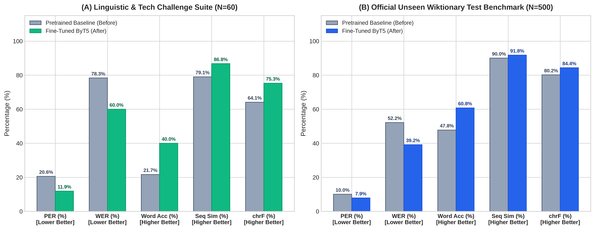
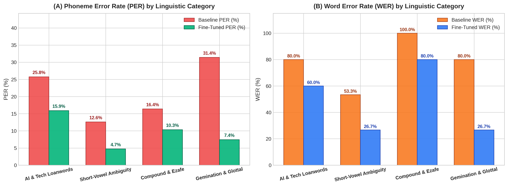
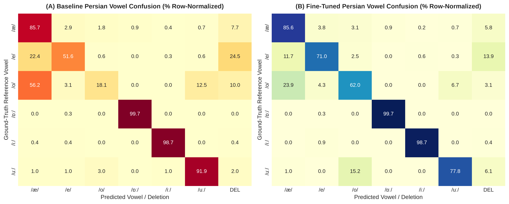
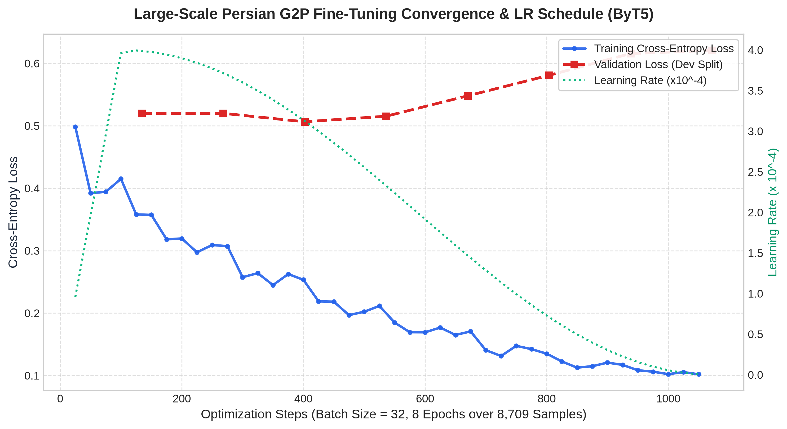
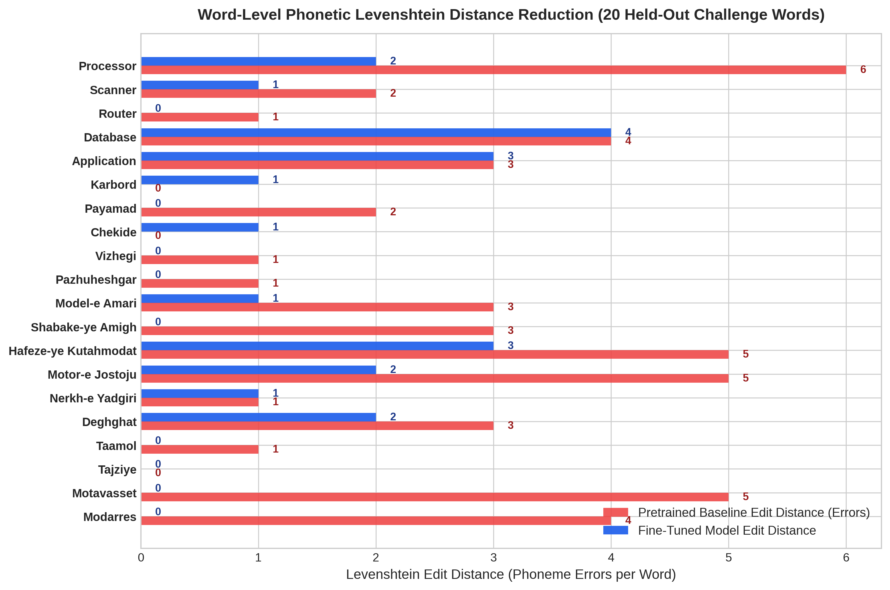
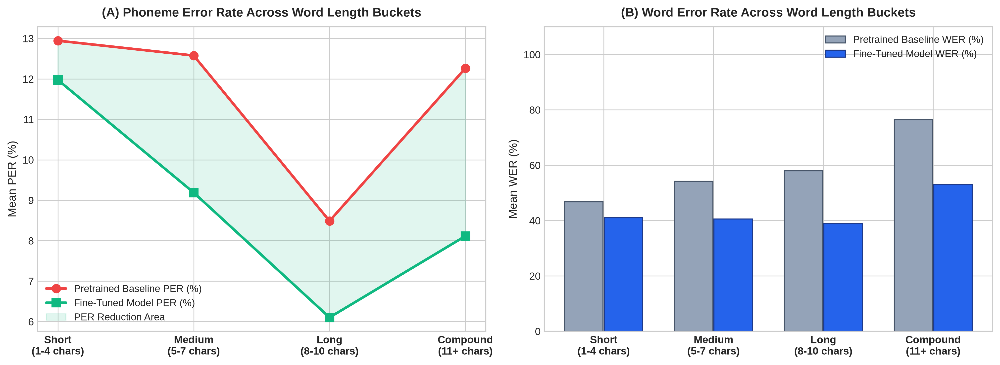
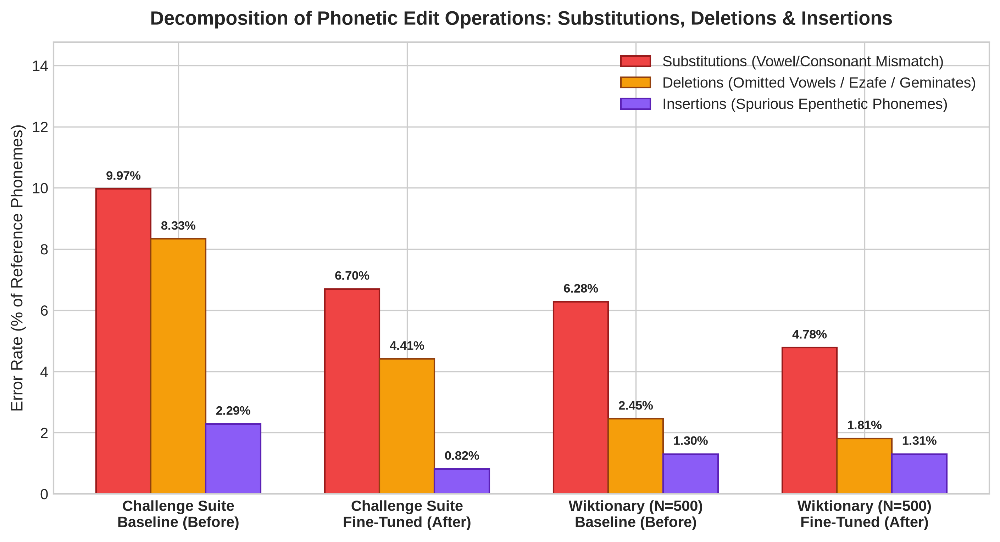
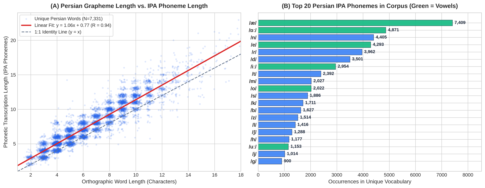
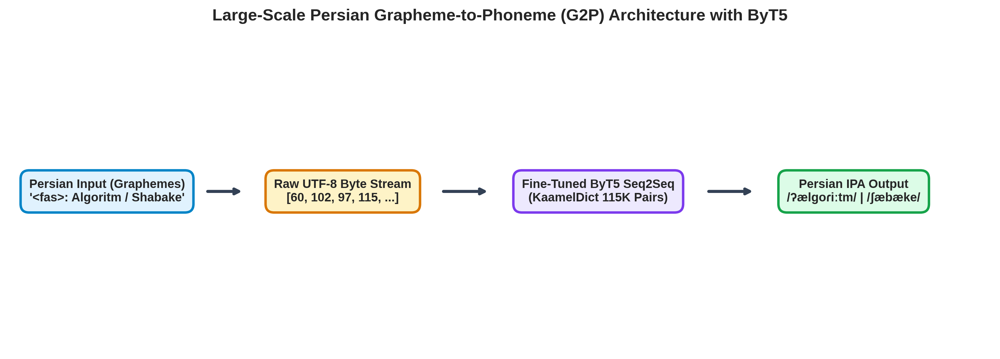

Acoustic before vs. after fine-tuning comparison (fa-IR-FaridNeural TTS) on the 116K KaamelDict corpus.
Evaluating multi-word technical sentences for Ezafe cadence, loanword phonotactics, and Tashdid prosody.
مدل ترنسفورمر و شبکه عصبی در پایتورچ و تنسورفلو الگوریتم گرافیم را بهینهسازی میکنند.
مهندسی پزشکی و محاسبه دقیق متغیرها در هوش مصنوعی و یادگیری ماشین توجه زیادی دارد.
پژوهشگران علم داده در کگل با فریمورک دیپلرنینگ و توکنایزر مسئله اتصال را حل کردند.
Click any chart to open high-resolution interactive Lightbox viewer.








